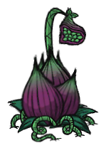
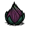
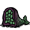
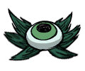
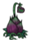

| Lureplant | |
|  |
|
| Health | 300 |
| Special Ability | Spawns |
| Loot |   Undigested items |
| Spawns from | |
| DebugSpawn | "lureplant" |
| Eyeplant | |
|  |
|
| Health | 30 |
| Damage | 20 |
| Attack Period | 1 |
| Attack Range | 2.5 |
| Special Ability | Eats nearby items |
| Spawns from |  |
| DebugSpawn | "eyeplant" |
| “ | Finally! A useful vegetable! | ” |
| –Wigfrid | ||
The Lureplant is a hostile plant which is so named for its behavior of dangling meat to attract prey. Like Krampus, The Lureplant has its own inventory, which is filled with the items its Eyeplants (see below) have consumed but has not yet digested. It has the capability of consuming and digesting just about anything that can fit in the player's inventory. The default digestion time for an item consumed by a Lureplant is 20 seconds. This makes it hard and inefficient to use the Lureplant to collect/farm common items, and makes it a hazard if any rare items are consumed.
When it is ready to produce a lure but no meat is available, it will produce Leafy Meat as a lure instead. This lure, along with any other meats the Lureplant may use as bait, may be harvested by unequipping any weapon such that the option to "harvest meat" appears instead of "attack". When a meat is successfully harvested from a Lureplant, all Eyeplants will disappear, and the bulb will revert to a "just planted" look. The bulb will not display another meat until it is capable of producing Eyeplants, 2 days later. If a Lureplant dangles the same lure for more than the time it takes the lure to spoil, harvesting it will give nothing. The player can hit the Lureplant to make it retract its empty tendril, and soon, it'll come out again with a fresh Leafy Meat. In winter, Lureplants will withdraw their roots and Eyeplants, producing no lures.
With normal damage modifier characters, Lureplants take 9 hits with a Spear; 8 with a Bat Bat; 6 with a Tentacle Spike, Ham Bat, and Thulecite Club; and 5 with Dark Sword to be killed. Killing the Lureplant will also allow the player to collect the Leafy Meat, in addition to any items the Lureplant has collected in its inventory, provided they have not yet been digested. Additionally, a Lureplant will always drop a Fleshy Bulb after death, which may be replanted on any valid terrain.
A Lureplant will only spawn in a location situated within a certain distance of any area the player has previously walked (approx. on the day number 13), but will not grow on certain terrain types (man-made turfs, rocky turfs, or spider creep). This can be where the player is standing currently (on screen), but it actually has a range well beyond what one uncovers on the map, so it may not be noticed right away. However, unlike other changes to the landscape, the map updates immediately when a Lureplant has spawned, without requiring the player revisit the location. This makes detecting a Lureplant spawn easier.
The Lureplant's bulb itself does not possess any offensive or defensive capabilities, relying instead on the Eyeplants surrounding it for protection and sustenance.
An Eyeplant is spawned from a Lureplant and will consume or attack anything that gets too close, including food from Crock Pots, Farms/Improved Farms, and Drying Racks; Tooth Traps; and thrown Boomerangs. However, Eyeplants won't eat Backpacks and other containers. They are not very durable and will quickly retreat underground after being damaged by 30 HP. However, as long as the lure remains, new Eyeplants will pop up again after only a short interval. If an Eyeplant is attacked, the Lureplant from which it was spawned will withdraw the lure. After a short period of time, the Lureplant will once again pull out the lure.
Both the Lureplant and the Eyeplants are highly vulnerable to fire. Once one catches fire, it will quickly spread to the others, and they remain on fire until death. Lureplants that die in this manner destroy most of the items they have collected, though there exists a chance for some items to emerge unscathed, including its current lure.
With normal damage modifier characters, Eyeplants will retreat into the ground with a single hit from all weapons.
Eyeplants cannot emerge from manmade turfs, rocky turfs, or spider creep. This makes Leafy Meat farms viable, if bulbs are planted with a great deal of turf that Eyeplants can't grow on around them.
Eyeplants will not spawn during winter (i.e. the parent Lureplant effectively "hibernates" until winter is over); any Eyeplants that have already spawned will de-spawn when winter arrives, and the Lureplant will look "just planted".
A single Lureplant is capable of sustaining up to 27 Eyeplants at once.
")
| Mobs | |
| Hostile Monsters | Batilisk • Cave Spider • Clockwork Bishop • Clockwork Rook • Clockwork Knight • Dangling Depth Dweller • Depths Worm • Frog • Guardian Pig • Ghost • Shadow Creature • Hound (Red Hound • Blue Hound) • Killer Bee • Lureplant • MacTusk • Merm • Mosquito • Spider • Spider Warrior • Spitter • Tallbird • Tentacle (Big Tentacle • Baby Tentacle) • Wee MacTusk • (Birchnut Treeguard • Varg |
| Boss Monsters | Ancient Guardian • Deerclops • Spider Queen • Treeguard • (Bearger • Dragonfly • Goose |
| Neutral Animals | Bee • Beefalo • Bunnyman (Beardlord) • Koalefant • Krampus • Pengull • Pig (Werepig) • Rock Lobster • Snurtle • Slurtle • Smallish Tallbird • Splumonkey • (Buzzard • Catcoon • Volt Goat |
| Passive Animals | Baby Beefalo • Butterfly • Chester • Crow • Gobbler • Mandrake • Rabbit (Beardling) • Redbird • Smallbird • Snowbird • (Glommer • Moleworm |
| Other | Abigail • Charlie • Maxwell • Pig King |
| Naturally spawning world objects | |
| Plants | Berry Bush • Carrot • Cave Banana Tree • Cave Lichen • Flower (Evil Flower, Fern) • Grass • Light Flower • Lureplant • Mandrake • Mushrooms • Mushtree • Plant • Reeds • Sapling • Spiky Bush • Tree • Totally Normal Tree |
| Mobs and Mob Housing | Beehive • Hound Mound • Pond • Pig Fortress • Pig House • Pig King • Pig Torch • Rabbit Hutch • Rundown House • Slurtle Mound • Spider Den • Spilagmite • Splumonkey Pod • Tallbird Nest • Walrus Camp • Worm Hole |
| Inanimate | Ancient Pseudoscience Station • Ancient Statue • Basalt • Boulder • Gramaphone • Grave • Harp Statue • Headstone • Suspicious Dirt Pile • Marble Pillar • Marble Tree • Maxwell's Door • Maxwell Statue • Maxwell's Light • Merm Head • Nightmare Light • Nightmare Lock • Nightmare Throne • Obelisk • Ornate Chest • Pig Head • Pillars • Relic • Sinkhole • Skeleton • Stalagmite • Touch Stone • Thulecite Wall |
| Things | Box Thing • Crank Thing • Eye Bone • Metal Potato Thing • Ring Thing • Wooden Thing |

{kind=link}
{kind=link}
{kind=link}
{kind=link}
{kind=link}
{kind=link}
{kind=link}
{kind=link}
{kind=link}
{kind=link}